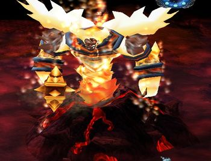

Hit him freely untill he use Frenzy spell, then use W and run out of his aggro. Go back when it wears down.
Save your R and T to kill off his lava summons, its fairly safe and easy tactic.
If you are really weak, attack him on range from right side, there is no close to boss minions on right side that would hinder you.